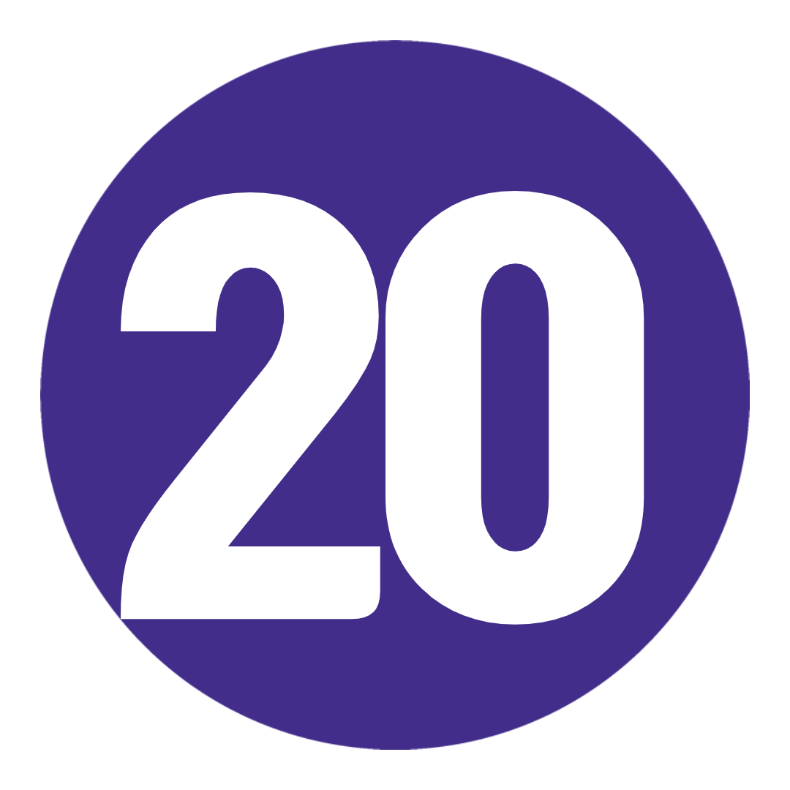

21 일
10 국가
1 인당
US $ 3,628.00 부터

여행 코드: EHWDLL-1
여행 노트 다운로드-
날짜 및 가격 확인
2021년 11월 11월 26일 금 ~ 12월 16일 목 디스커버 윈터 2021-22 US$3,628.00 2021년 12월 12월 3일 금 ~ 12월 23일 목 디스커버 윈터 2021-22 US$3,849.00 2022년 1월 1월 7일 수 ~ 1월 27일 토 디스커버 윈터 2021-22 US$3,849.00
여행개요 |
|
 밤 밤 |
 식사 식사 |
 호텔 호텔 |
 최대 인원 최대 인원 |
 여행 가이드 여행 가이드 |
|
| 시 작 | 06 : 00 런던 (또는 17 : 00 파리) |
| 종 료 | 09 : 00 암스테르담 (또는 21 : 00 런던) |
여행 개요
지도
나를 위한 여행인가? 놀라운. 반짝이. 광범위하다.
역사에 흠뻑 젖어 있고 로맨스가 뚝뚝 떨어지고 입이 떡 벌어지는 명소가 곳곳에 있는 상징적인 유럽 도시를 통해 겨울 여행을 스크롤하고 계십니까?
당신은 지금 멈출 수 있습니다. 이 21일 간의 발견은 파리의 화려함, 고대 로마의 장엄함, 베를린의 초현대적인 분위기를 담고 있습니다.
전문적인 팁과 모든 내부 지식을 제공하는 멋진 AF Trip Leader는 말할 것도 없습니다. 이? 이것이 진정한 유럽 - 겨울 스타일을 발견하는 방법입니다.
여행 일정
-
 영국 런던에서 프랑스 파리로(또는 파리에 합류)
새롭고 이국적인 것을 받아들일 준비가 되셨습니까? 더 깊이 들어가십시오. 지역 주민을 만나세요. 모든 것을 발견하십시오. 앞으로 21일이 인생을 바꿀 것입니다. ol' Blighty에서 여행 동료를 만나고, 컵파 차를 마시며 몸을 녹이고 AUX 코드에 손을 얹으십시오. 우리는 채널을 건너기 위해 일찍 길을 나섭니다. 차라리 파리에서 만나? 드라마가 없다! 코코 샤넬, 모나리자, 세계에서 가장 맛있는 마카롱의 고향 - 파리는 문화와 군침이 도는 음식의 유럽 수도라는 명성을 얻을 자격이 있습니다. 저희를 믿으세요. 우리는 갱단과 푸짐한 저녁 식사를 하기 전에 운전 투어로 모든 쇼 스토퍼를 확인할 것입니다. 건배!
영국 런던에서 프랑스 파리로(또는 파리에 합류)
새롭고 이국적인 것을 받아들일 준비가 되셨습니까? 더 깊이 들어가십시오. 지역 주민을 만나세요. 모든 것을 발견하십시오. 앞으로 21일이 인생을 바꿀 것입니다. ol' Blighty에서 여행 동료를 만나고, 컵파 차를 마시며 몸을 녹이고 AUX 코드에 손을 얹으십시오. 우리는 채널을 건너기 위해 일찍 길을 나섭니다. 차라리 파리에서 만나? 드라마가 없다! 코코 샤넬, 모나리자, 세계에서 가장 맛있는 마카롱의 고향 - 파리는 문화와 군침이 도는 음식의 유럽 수도라는 명성을 얻을 자격이 있습니다. 저희를 믿으세요. 우리는 갱단과 푸짐한 저녁 식사를 하기 전에 운전 투어로 모든 쇼 스토퍼를 확인할 것입니다. 건배!
키워드 공식 만찬 + 파리의 드라이브 투어 파리
네, 드디어 오셨습니다. 그래서, 오늘은 단순히 당신을 하는 날입니다. 루브르 박물관(미리 티켓을 예약하세요!)과 오르세 미술관을 방문하여 버킷리스트를 확고히 만드십시오. 마을에서 가장 아늑한 제과점을 찾으십시오(여행 리더는 그것이 어디에 있는지 알고 있습니다). Shakespeare and Co. Bookshop에서 역사의 서가 사이에서 길을 잃으십시오. 샹젤리제 거리를 따라 플라스틱 플래시를 터트립니다. 또는 I Love You Wall에서 기분 좋은 분위기를 연출해보세요. 서리가 내린 느낌? 우리는 당신을 얻었습니다 – 선택적인 자전거 여행에서 그 송아지를 따뜻하게 유지하십시오. 또는 세느강을 따라 유람선을 타고 사랑의 도시를 또 다른 모습으로 볼 수 있습니다. 오늘 밤, 카바레에서 저녁 옵션으로 전력을 다하십시오. 밝은 조명, OTT 의상 및 죽음에 도전하는 곡예를 생각해 보십시오. 당신은 결국 캉캉의 고향에 있습니다.
파리
네, 드디어 오셨습니다. 그래서, 오늘은 단순히 당신을 하는 날입니다. 루브르 박물관(미리 티켓을 예약하세요!)과 오르세 미술관을 방문하여 버킷리스트를 확고히 만드십시오. 마을에서 가장 아늑한 제과점을 찾으십시오(여행 리더는 그것이 어디에 있는지 알고 있습니다). Shakespeare and Co. Bookshop에서 역사의 서가 사이에서 길을 잃으십시오. 샹젤리제 거리를 따라 플라스틱 플래시를 터트립니다. 또는 I Love You Wall에서 기분 좋은 분위기를 연출해보세요. 서리가 내린 느낌? 우리는 당신을 얻었습니다 – 선택적인 자전거 여행에서 그 송아지를 따뜻하게 유지하십시오. 또는 세느강을 따라 유람선을 타고 사랑의 도시를 또 다른 모습으로 볼 수 있습니다. 오늘 밤, 카바레에서 저녁 옵션으로 전력을 다하십시오. 밝은 조명, OTT 의상 및 죽음에 도전하는 곡예를 생각해 보십시오. 당신은 결국 캉캉의 고향에 있습니다.
키워드 아침밥
추가 옵션 파리 카바레 쇼: €80부터 / 세느강 유람선: €10부터 / 파리 자전거 투어: €30부터 파리에서 스위스 알프스,스위스까지
면책 조항: 오늘은 약간의 드라이브입니다. 하지만 이미 알고 계셨죠? 끈을 묶으십시오. 여행 동료에 대해 더 잘 알아보세요. 그리고 가장 입이 떡 벌어지고 눈 덮인 풍경이 창 너머로 윙윙거리는 소리를 들을 수 있습니다. 그들은 집에서 이와 같은 전망을 가지고 있지 않습니다. 동화 같은 마을과 상상의 낭만적인 성을 큐에 넣으세요. 오묘한 엥겔베르그가 다음 이틀 밤 우리의 거점이 될 것입니다. 나중에, 우리는 호텔 바에 향하기 전에 그룹 저녁 식사에 갇힐 것입니다. 또는 김이 모락모락 나는 글루바인 한잔과 함께 상쾌한(참고: 얼어붙은) 고산 공기에 앉아 있습니다. 예, 이것이 당신이 온 이유입니다.
파리에서 스위스 알프스,스위스까지
면책 조항: 오늘은 약간의 드라이브입니다. 하지만 이미 알고 계셨죠? 끈을 묶으십시오. 여행 동료에 대해 더 잘 알아보세요. 그리고 가장 입이 떡 벌어지고 눈 덮인 풍경이 창 너머로 윙윙거리는 소리를 들을 수 있습니다. 그들은 집에서 이와 같은 전망을 가지고 있지 않습니다. 동화 같은 마을과 상상의 낭만적인 성을 큐에 넣으세요. 오묘한 엥겔베르그가 다음 이틀 밤 우리의 거점이 될 것입니다. 나중에, 우리는 호텔 바에 향하기 전에 그룹 저녁 식사에 갇힐 것입니다. 또는 김이 모락모락 나는 글루바인 한잔과 함께 상쾌한(참고: 얼어붙은) 고산 공기에 앉아 있습니다. 예, 이것이 당신이 온 이유입니다.
키워드 아침밥 + 공식 만찬 스위스 알프스
겨울의 스위스를 설명하는 단어는 MAGIC입니다. 그래서, 이것이 정확히 무엇을 의미하는지 알아볼 수 있는 자유 시간입니다. 맑은 날을 위한 우리의 제안은? 회전 곤돌라를 타고 티틀리스 산 정상까지 올라가 믿을 수 없는 파노라마를 감상하세요(노력 없이). 또는 부츠를 신고 숲길을 탐험하세요. '거룩한' 순간이 보장됩니다. 오히려 이곳의 미식의 경이로움을 발견하시겠습니까? 시내로 향하여 타오르는 불 옆에서 세계 최고의 핫 초콜릿을 한 모금 즐기십시오. 무엇을 선택하든 며칠 동안 조회수가 표시됩니다. 오늘 저녁은 당신의 몫입니다. 아직 치즈 퐁듀를 먹어보지 못하셨나요? 지금이 기회입니다(유당 불내증이 아닌 경우).
스위스 알프스
겨울의 스위스를 설명하는 단어는 MAGIC입니다. 그래서, 이것이 정확히 무엇을 의미하는지 알아볼 수 있는 자유 시간입니다. 맑은 날을 위한 우리의 제안은? 회전 곤돌라를 타고 티틀리스 산 정상까지 올라가 믿을 수 없는 파노라마를 감상하세요(노력 없이). 또는 부츠를 신고 숲길을 탐험하세요. '거룩한' 순간이 보장됩니다. 오히려 이곳의 미식의 경이로움을 발견하시겠습니까? 시내로 향하여 타오르는 불 옆에서 세계 최고의 핫 초콜릿을 한 모금 즐기십시오. 무엇을 선택하든 며칠 동안 조회수가 표시됩니다. 오늘 저녁은 당신의 몫입니다. 아직 치즈 퐁듀를 먹어보지 못하셨나요? 지금이 기회입니다(유당 불내증이 아닌 경우).
키워드 아침밥
추가 옵션 Titlis 산으로의 경치 좋은 여행: CHF 64부터 스위스 알프스에서 이탈리아 피렌체까지
마지막 눈덩이로 여행 리더를 때리고 꿈결 같은 서리로 덥은 봉우리의 또 다른 사진을 찍습니다. 당신은 당신의 뚱뚱한 바지를 포장, 오른쪽? 오늘 밤 포함된 저녁 식사 전에, 이 기분에 딱 맞는 사람들을 위해 양탄자를 깔고 아르노 강을 따라 산책을 즐겨보세요. 그럼: 누가 노래방이라고 했지? 당신이 그것을 원한다면 지역 바에서 발라드의 전투에서 갱단에 합류하십시오. 또는 젤라테리아에서 좋은 재료를 한 스쿱(또는 두 개) 찾아보세요. 누가 겨울에 젤라토를 먹을 수 없다고 했습니까? 아무도.
스위스 알프스에서 이탈리아 피렌체까지
마지막 눈덩이로 여행 리더를 때리고 꿈결 같은 서리로 덥은 봉우리의 또 다른 사진을 찍습니다. 당신은 당신의 뚱뚱한 바지를 포장, 오른쪽? 오늘 밤 포함된 저녁 식사 전에, 이 기분에 딱 맞는 사람들을 위해 양탄자를 깔고 아르노 강을 따라 산책을 즐겨보세요. 그럼: 누가 노래방이라고 했지? 당신이 그것을 원한다면 지역 바에서 발라드의 전투에서 갱단에 합류하십시오. 또는 젤라테리아에서 좋은 재료를 한 스쿱(또는 두 개) 찾아보세요. 누가 겨울에 젤라토를 먹을 수 없다고 했습니까? 아무도.
키워드 아침밥 + 공식 만찬 피렌체-로마
플로렌스는 왕좌의 게임보다 더 많은 스토리 라인을 가지고 있고, Fitzroy 힙스터보다 더 많은 문화를 가지고 있으며, 세계에 David를 주었습니다. 현지 가이드와 함께 도보 여행을 통해 이 놀라운 도시에 대해 더 깊이 알아보세요. 나중에 la bella Roma가 우리 이름을 부르고 있습니다. 2500년의 역사. 베스파. 에스프레소. 두 뺨 키스. 공격적인 손짓. 그리고 피자는 그 맛 그대로. 로마가 유럽에서 꼭 해야 할 일 목록의 맨 위에 있는 이유가 있습니다. 그리고 그것은 겨울에 훨씬 더 좋습니다(우리의 완전히 편견 없는 의견). 오늘 밤, 당신은 미식가를 위해 디즈니랜드에 있습니다. 그러니 뚱뚱한 바지를 털어내고 최고의 카시오 에페를 어디에서 찾을 수 있는지 여행 리더에게 물어보십시오. 실망하지 않으실 거에요. 저희를 믿으세요.
피렌체-로마
플로렌스는 왕좌의 게임보다 더 많은 스토리 라인을 가지고 있고, Fitzroy 힙스터보다 더 많은 문화를 가지고 있으며, 세계에 David를 주었습니다. 현지 가이드와 함께 도보 여행을 통해 이 놀라운 도시에 대해 더 깊이 알아보세요. 나중에 la bella Roma가 우리 이름을 부르고 있습니다. 2500년의 역사. 베스파. 에스프레소. 두 뺨 키스. 공격적인 손짓. 그리고 피자는 그 맛 그대로. 로마가 유럽에서 꼭 해야 할 일 목록의 맨 위에 있는 이유가 있습니다. 그리고 그것은 겨울에 훨씬 더 좋습니다(우리의 완전히 편견 없는 의견). 오늘 밤, 당신은 미식가를 위해 디즈니랜드에 있습니다. 그러니 뚱뚱한 바지를 털어내고 최고의 카시오 에페를 어디에서 찾을 수 있는지 여행 리더에게 물어보십시오. 실망하지 않으실 거에요. 저희를 믿으세요.
키워드 아침밥 + 현지 가이드와 함께하는 피렌체 도보 여행 로마
일어나 빛나라! 부츠를 신고 비니를 들고 카메라를 챙기세요. 오늘의 도보 여행은 책을 위한 것입니다. 우리는 몇 시간 동안 논스톱 명소, 관광지를 벗어나 숨겨진 보석, 거의 3000년의 역사에 대해 이야기하고 있습니다 . 판테온(Pantheon)을 지나 트레비 분수(Trevi Fountain)에 2센트를 던지고 (하지 마세요) 스페인 계단(Spanish Steps)에 앉아 거대한 콜로세움(Colosseum)의 그늘 아래에서 물건을 감습니다. 한 단어, 네 음절: 믿을 수 없습니다. 나머지 오후는 100% 당신에게 달려 있습니다. 멋진 전망을 위해 Capitoline Hill로 향하십시오. 로스트 푸드 팩토리(Lost Food Factory)(아마도 도시 최고의 샌드위치 가게 중 하나)에서 식사를 즐겨보세요. 또는 현지인처럼 현지 카페나 광장에서 약간의 돌체 파 니엔테(dolce far niente)에 빠져보세요.
로마
일어나 빛나라! 부츠를 신고 비니를 들고 카메라를 챙기세요. 오늘의 도보 여행은 책을 위한 것입니다. 우리는 몇 시간 동안 논스톱 명소, 관광지를 벗어나 숨겨진 보석, 거의 3000년의 역사에 대해 이야기하고 있습니다 . 판테온(Pantheon)을 지나 트레비 분수(Trevi Fountain)에 2센트를 던지고 (하지 마세요) 스페인 계단(Spanish Steps)에 앉아 거대한 콜로세움(Colosseum)의 그늘 아래에서 물건을 감습니다. 한 단어, 네 음절: 믿을 수 없습니다. 나머지 오후는 100% 당신에게 달려 있습니다. 멋진 전망을 위해 Capitoline Hill로 향하십시오. 로스트 푸드 팩토리(Lost Food Factory)(아마도 도시 최고의 샌드위치 가게 중 하나)에서 식사를 즐겨보세요. 또는 현지인처럼 현지 카페나 광장에서 약간의 돌체 파 니엔테(dolce far niente)에 빠져보세요.
키워드 아침밥 + 로마 도보 여행 + 로마 지하철 티켓 로마
모든 것을 체크하지 않았습니까? 우리는 당신을 얻었다. 앞서 준비한 또 다른 자유일입니다. 표면만 훑어보지 말고 모든 순간을 최대한 경험하십시오. 바티칸 시국의 선택적 투어에서 당신의 축복을 세고 역사적인 걸작으로 I-spy를 플레이하십시오. Castel Sant'Angelo(일명 Hadrian's Tomb)를 확인하십시오. 구운 밤에 간식을 먹고 테베레 강을 따라 산책해 보세요. 피자리움 본치(Pizzarium Bonci)에서 한 조각을 위해 점심시간 러시와 싸워보세요. Via Condotti에 들를 때까지 쇼핑하세요. 또는 스케이트에 끈을 묶고 링크를 타십시오(여기에 있는 시간에 따라 다름). 오늘 밤, 파스타 알라 까르보나라를 주문하고 마음이 날아갈 준비를 하세요. 그런 다음 모든 독특한 젤라토 맛을 보려면 Fatamorgana로 향하십시오.
로마
모든 것을 체크하지 않았습니까? 우리는 당신을 얻었다. 앞서 준비한 또 다른 자유일입니다. 표면만 훑어보지 말고 모든 순간을 최대한 경험하십시오. 바티칸 시국의 선택적 투어에서 당신의 축복을 세고 역사적인 걸작으로 I-spy를 플레이하십시오. Castel Sant'Angelo(일명 Hadrian's Tomb)를 확인하십시오. 구운 밤에 간식을 먹고 테베레 강을 따라 산책해 보세요. 피자리움 본치(Pizzarium Bonci)에서 한 조각을 위해 점심시간 러시와 싸워보세요. Via Condotti에 들를 때까지 쇼핑하세요. 또는 스케이트에 끈을 묶고 링크를 타십시오(여기에 있는 시간에 따라 다름). 오늘 밤, 파스타 알라 까르보나라를 주문하고 마음이 날아갈 준비를 하세요. 그런 다음 모든 독특한 젤라토 맛을 보려면 Fatamorgana로 향하십시오.
키워드 아침밥
추가 옵션 바티칸 시국 가이드 투어 로마-베니스
로마에 작별 인사를 하십시오. 우리는 오늘 그 유명한 침몰하는 도시로 향하고 있습니다. 호텔에 체크인한 후에는 모든 소란이 무엇인지 확인할 시간입니다. 산마르코 광장, 도제의 궁전, 아카데미아 다리 등을 둘러보는 도보 여행을 통해 베니스의 흔한 용의자들에 대해 알아보세요. 그리고 나서 – 이 아름답고 낭만적인 도시는 당신의 것입니다. 우리의 제안? 운하가 내려다보이는 마끼아또를 들고 곤돌라 기사가 배를 안개 속으로 안내하는 모습을 지켜보세요. 이 곳은 온통 로맨스가 쓰여져 있습니다. 나중에 Osteria Al Portego에서 값싼 식사를 하거나 군침이 도는 베네치안 패스트리로 배를 채우십시오(여기서는 판단하지 않음).
로마-베니스
로마에 작별 인사를 하십시오. 우리는 오늘 그 유명한 침몰하는 도시로 향하고 있습니다. 호텔에 체크인한 후에는 모든 소란이 무엇인지 확인할 시간입니다. 산마르코 광장, 도제의 궁전, 아카데미아 다리 등을 둘러보는 도보 여행을 통해 베니스의 흔한 용의자들에 대해 알아보세요. 그리고 나서 – 이 아름답고 낭만적인 도시는 당신의 것입니다. 우리의 제안? 운하가 내려다보이는 마끼아또를 들고 곤돌라 기사가 배를 안개 속으로 안내하는 모습을 지켜보세요. 이 곳은 온통 로맨스가 쓰여져 있습니다. 나중에 Osteria Al Portego에서 값싼 식사를 하거나 군침이 도는 베네치안 패스트리로 배를 채우십시오(여기서는 판단하지 않음).
키워드 아침밥 + 베니스 버스 티켓 + 베니스 셔틀 기차 티켓 + 베니스의 도보 여행
추가 옵션 맞춤 여행 티셔츠 또는 후드티를 받으세요: 최저 €21 베니스
수백 년 된 건축물. 독창적인 요리. 그리고 양동이의 문화. 베니스는 탐험을 구걸하고 있습니다. 대운하를 따라 포함된 곤돌라를 탄 후에는 하루 종일 그렇게 할 수 있습니다. 제안이 필요하십니까? 내부 팁: 시간을 할애하여 이 세상에 없는 Libreria Acqua Alta 서점을 찾거나 Giudecca Island로 여행을 떠나 관광 트레일을 떠나십시오. 방황하십시오. 가난한 이탈리아어로 현지인들과 이야기를 나누세요. 운하와 광장의 미로에서 길을 잃으십시오. 그런 다음 Café Florian에서 진한 핫 초콜릿과 잘레티 비스킷이 담긴 파이핑 머그를 찾으십시오. 그것이 추억을 만드는 것입니다.
베니스
수백 년 된 건축물. 독창적인 요리. 그리고 양동이의 문화. 베니스는 탐험을 구걸하고 있습니다. 대운하를 따라 포함된 곤돌라를 탄 후에는 하루 종일 그렇게 할 수 있습니다. 제안이 필요하십니까? 내부 팁: 시간을 할애하여 이 세상에 없는 Libreria Acqua Alta 서점을 찾거나 Giudecca Island로 여행을 떠나 관광 트레일을 떠나십시오. 방황하십시오. 가난한 이탈리아어로 현지인들과 이야기를 나누세요. 운하와 광장의 미로에서 길을 잃으십시오. 그런 다음 Café Florian에서 진한 핫 초콜릿과 잘레티 비스킷이 담긴 파이핑 머그를 찾으십시오. 그것이 추억을 만드는 것입니다.
키워드 아침밥 + 대운하를 타고 내려가는 곤돌라 베니스에서 블레드 호수를 거쳐 슬로베니아 류블랴나로
오늘 우리는 류블랴나를 GPS에 연결합니다. 그것을 발음해보십시오. 감히. 그러나 먼저: 매혹적인 블레드 호수를 방문하십시오. 필터가 없으면 더욱 좋습니다. 저희를 믿으세요. 반짝이는 푸른 호수 주변을 산책하십시오. 또는 섬으로 건너가는 보트를 빌려 소원의 종을 누르십시오. 더 많은 소원을 빌었잖아, 그렇지? 슬로베니아의 트렌디한 수도로 이동한 후 전문 트립 리더와 함께 구시가지 주변을 빠르게 산책한 후 직접 탐험을 시작하세요. 성은 켈트 시대부터 여러분을 기다리고 있습니다. 그러니 더 이상 매달리지 마십시오. 오늘 밤, 갱단을 모아 라이브 음악과 함께 와인 한 잔을 즐기십시오.
베니스에서 블레드 호수를 거쳐 슬로베니아 류블랴나로
오늘 우리는 류블랴나를 GPS에 연결합니다. 그것을 발음해보십시오. 감히. 그러나 먼저: 매혹적인 블레드 호수를 방문하십시오. 필터가 없으면 더욱 좋습니다. 저희를 믿으세요. 반짝이는 푸른 호수 주변을 산책하십시오. 또는 섬으로 건너가는 보트를 빌려 소원의 종을 누르십시오. 더 많은 소원을 빌었잖아, 그렇지? 슬로베니아의 트렌디한 수도로 이동한 후 전문 트립 리더와 함께 구시가지 주변을 빠르게 산책한 후 직접 탐험을 시작하세요. 성은 켈트 시대부터 여러분을 기다리고 있습니다. 그러니 더 이상 매달리지 마십시오. 오늘 밤, 갱단을 모아 라이브 음악과 함께 와인 한 잔을 즐기십시오.
키워드 아침밥 + 블레드 호수 방문 + 류블랴나 오리엔테이션 류블랴냐에서 헝가리 부다페스트로
우리의 류블랴나 연애는 짧았지만 너무 달콤했습니다. 다음으로? 부다와 페스트의 쌍둥이 도시. 운전기사가 운전사를 타고 Chain Bridge, Castle District, Gellert Hotel, Heroes' Square 및 House of Terror를 지나갈 때 왜 이곳을 City of Bridges라고 부르는지 알아보세요. SD 카드가 가득 찼고 배는 투덜거립니다. 저녁에는 자유롭게 탐험할 수 있습니다. 사랑해! 굴라시, 치킨 파프리카시, 랑고스, 도보스 케이크 등 현지 음식에 빠져보세요. 당신이 파프리카를 좋아하기를 바랍니다. 그들은 여기 파프리카에 집착하고 있습니다. 아니면 원래의 루인 바 중 한 곳에서 멋쟁이들과 어울리세요. 우리의 제안? pálinka(전통 과일 브랜디)를 맛보십시오. 이것은 당신의 속을 따뜻하게 안아주는 것과 같습니다.
류블랴냐에서 헝가리 부다페스트로
우리의 류블랴나 연애는 짧았지만 너무 달콤했습니다. 다음으로? 부다와 페스트의 쌍둥이 도시. 운전기사가 운전사를 타고 Chain Bridge, Castle District, Gellert Hotel, Heroes' Square 및 House of Terror를 지나갈 때 왜 이곳을 City of Bridges라고 부르는지 알아보세요. SD 카드가 가득 찼고 배는 투덜거립니다. 저녁에는 자유롭게 탐험할 수 있습니다. 사랑해! 굴라시, 치킨 파프리카시, 랑고스, 도보스 케이크 등 현지 음식에 빠져보세요. 당신이 파프리카를 좋아하기를 바랍니다. 그들은 여기 파프리카에 집착하고 있습니다. 아니면 원래의 루인 바 중 한 곳에서 멋쟁이들과 어울리세요. 우리의 제안? pálinka(전통 과일 브랜디)를 맛보십시오. 이것은 당신의 속을 따뜻하게 안아주는 것과 같습니다.
키워드 아침밥 + 부다페스트의 드라이브 투어 부다페스트
당신은 탐험의 자유를 원했습니다 – 여기 있습니다. 중앙시장회관에서 확인하세요. 유대인 지구를 탐험하세요. Flippermúzeum에서 핀볼을 플레이하세요. House of Terrors에서 끔찍한 교육을 받으십시오. 익명의 동상을 사냥하십시오. Széchenyi Thermal Baths의 따뜻한 치료 물에 몸을 담그십시오. 또는 부다 성으로 가서 어부의 요새에서 모든 전망을 확인하십시오. 오늘 밤에 포함된 저녁 식사를 위해 돌아오십시오. 우리는 다뉴브 강을 따라 유람선을 타고 수준을 높일 것입니다. 코트를 들고 위층에 앉으십시오. 부다 성과 국회의사당은 크리스마스처럼 조명이 더욱 아름답게 보입니다. 저희를 믿으세요.
부다페스트
당신은 탐험의 자유를 원했습니다 – 여기 있습니다. 중앙시장회관에서 확인하세요. 유대인 지구를 탐험하세요. Flippermúzeum에서 핀볼을 플레이하세요. House of Terrors에서 끔찍한 교육을 받으십시오. 익명의 동상을 사냥하십시오. Széchenyi Thermal Baths의 따뜻한 치료 물에 몸을 담그십시오. 또는 부다 성으로 가서 어부의 요새에서 모든 전망을 확인하십시오. 오늘 밤에 포함된 저녁 식사를 위해 돌아오십시오. 우리는 다뉴브 강을 따라 유람선을 타고 수준을 높일 것입니다. 코트를 들고 위층에 앉으십시오. 부다 성과 국회의사당은 크리스마스처럼 조명이 더욱 아름답게 보입니다. 저희를 믿으세요.
키워드 아침밥 + 공식 만찬 + 다뉴브 디너 크루즈 부다페스트에서 오스트리아 비엔나로
헝가리에 손을 흔들고 우리는 오스트리아로 향하고 있습니다. 비엔나가 무엇으로 유명한지 짐작할 수 있다면 10점. 음악가. 그랜드 커피 하우스. 그리고 슈트루델(응!). 오페라 하우스(Opera House), 호프부르크 궁전(Hofburg Palace), 박물관 지구(Museum Quarter) 및 링슈트라세(Ringstrasse)와 같은 곳을 운전하면서 마음을 사로잡을 준비를 하십시오. 쇤부른 궁전에 있는 시씨 공주의 호화로운 정원을 둘러보며 시간을 내어 그녀의 호화로운 장식도 감상할 수 있습니다. 그런 다음: 오후는 당신의 것입니다. 박물관 지구를 깊이 탐험하십시오. 지금까지 마셔본 애프터눈 티 중 가장 많은 부지 애프터눈 티를 즐기려면 Cafe Central로 가십시오. 또는 옵션 콘서트에서 비엔나 체임버 오케스트라가 연주하는 모차르트와 바흐의 감미로운 소리를 즐겨보세요. 당신을 봐, 너무 문화.
부다페스트에서 오스트리아 비엔나로
헝가리에 손을 흔들고 우리는 오스트리아로 향하고 있습니다. 비엔나가 무엇으로 유명한지 짐작할 수 있다면 10점. 음악가. 그랜드 커피 하우스. 그리고 슈트루델(응!). 오페라 하우스(Opera House), 호프부르크 궁전(Hofburg Palace), 박물관 지구(Museum Quarter) 및 링슈트라세(Ringstrasse)와 같은 곳을 운전하면서 마음을 사로잡을 준비를 하십시오. 쇤부른 궁전에 있는 시씨 공주의 호화로운 정원을 둘러보며 시간을 내어 그녀의 호화로운 장식도 감상할 수 있습니다. 그런 다음: 오후는 당신의 것입니다. 박물관 지구를 깊이 탐험하십시오. 지금까지 마셔본 애프터눈 티 중 가장 많은 부지 애프터눈 티를 즐기려면 Cafe Central로 가십시오. 또는 옵션 콘서트에서 비엔나 체임버 오케스트라가 연주하는 모차르트와 바흐의 감미로운 소리를 즐겨보세요. 당신을 봐, 너무 문화.
키워드 아침밥 + 비엔나의 드라이브 투어 + 쇤부른 궁전 방문 (입구 불포함)
추가 옵션 사운드 오브 비엔나 오케스트라 티켓: €40부터 / 사운드 오브 비엔나 오케스트라 티켓(저녁 포함): €62부터 비엔나에서 마우트하우젠을 경유하여 체코 프라하로
첨탑이 가득한 스카이라인과 신비로운 프라하의 거리를 향해! 그러나 먼저: 인류의 회복력에 대한 교훈을 얻기 위해 이전 강제 수용소인 Mauthausen을 방문했습니다. 600년 된 천문 시계가 있는 이 그림 같은 완벽한 도시에 대해 더 잘 알기 위해 도보 여행을 시작하기 전에 호텔에 가방을 내려놓으십시오. 당신의 전문 여행 리더는 우리가 가는 동안 내일의 모든 필수 사항을 알려줄 것입니다. 저녁 식사 후에는 마을로 가서 체코 현지 맥주를 맛보거나 Alchemist에서 칵테일을 맛볼 수 있습니다. 1950년대 분위기가 물씬 풍기는 구식 장소. 힌트: 완전한 경험을 원하시면 '운명을 선택하세요'를 요청하세요(아침에 뵙겠습니다).
비엔나에서 마우트하우젠을 경유하여 체코 프라하로
첨탑이 가득한 스카이라인과 신비로운 프라하의 거리를 향해! 그러나 먼저: 인류의 회복력에 대한 교훈을 얻기 위해 이전 강제 수용소인 Mauthausen을 방문했습니다. 600년 된 천문 시계가 있는 이 그림 같은 완벽한 도시에 대해 더 잘 알기 위해 도보 여행을 시작하기 전에 호텔에 가방을 내려놓으십시오. 당신의 전문 여행 리더는 우리가 가는 동안 내일의 모든 필수 사항을 알려줄 것입니다. 저녁 식사 후에는 마을로 가서 체코 현지 맥주를 맛보거나 Alchemist에서 칵테일을 맛볼 수 있습니다. 1950년대 분위기가 물씬 풍기는 구식 장소. 힌트: 완전한 경험을 원하시면 '운명을 선택하세요'를 요청하세요(아침에 뵙겠습니다).
키워드 아침밥 + 공식 만찬 + 이전 강제 수용소 Mauthausen 방문 + 프라하의 도보 여행 + 프라하 지하철 티켓 프라하
맞습니다. 여러분의 하루, 여러분의 방식입니다. 그러니 나가서 자발적으로 이것이 내가 온 목적인 일을 하십시오. John Lennon 벽을 확인하십시오. 공산주의 박물관에서 역사에 흠뻑 빠져보세요. 모든 전망을 보려면 케이블카를 타고 페트린 힐(Petrin Hill)을 올라갑니다. 아니면 구시가 광장에 줄지어 늘어선 노점상 중 한 곳에서 맛있는 구운 돼지고기 롤을 드셔보세요. 약간의 홉 감정가가 되어보고 싶으신가요? 오늘 오후에 선택 가능한 맥주 시음회를 놓치지 마세요. 또는 trdelník의 설탕으로 채워진 서빙으로 내부 뚱뚱한 아이를 기쁘게하십시오. 생각해보세요: 계피 설탕으로 코팅된 따뜻하고 불에 구운 페이스트리 – 누텔라를 추가하면 꿈의 디저트가 완성됩니다. * 턱에서 침을 닦는다 *
프라하
맞습니다. 여러분의 하루, 여러분의 방식입니다. 그러니 나가서 자발적으로 이것이 내가 온 목적인 일을 하십시오. John Lennon 벽을 확인하십시오. 공산주의 박물관에서 역사에 흠뻑 빠져보세요. 모든 전망을 보려면 케이블카를 타고 페트린 힐(Petrin Hill)을 올라갑니다. 아니면 구시가 광장에 줄지어 늘어선 노점상 중 한 곳에서 맛있는 구운 돼지고기 롤을 드셔보세요. 약간의 홉 감정가가 되어보고 싶으신가요? 오늘 오후에 선택 가능한 맥주 시음회를 놓치지 마세요. 또는 trdelník의 설탕으로 채워진 서빙으로 내부 뚱뚱한 아이를 기쁘게하십시오. 생각해보세요: 계피 설탕으로 코팅된 따뜻하고 불에 구운 페이스트리 – 누텔라를 추가하면 꿈의 디저트가 완성됩니다. * 턱에서 침을 닦는다 *
키워드 아침밥
추가 옵션 프라하 현지 맥주 시음: 800 CZK부터 프라하에서 드레스덴을 경유하여 독일 베를린으로
다음? 맥주가 공식적으로 필수 식품 그룹으로 간주되는 국가(소시지, 소금에 절인 양배추 바로 옆). 안녕하세요 독일입니다! 가는 길에 800년 된 드레스덴을 알게 됩니다. 그런 다음: 다른 어느 곳보다 커리부어스트와 1인당 더 많은 힙스터를 준비하세요. 베를린 장벽, 독일 의회, 체크포인트 찰리, 브란덴부르크 문을 포함한 주요 명소를 둘러보기 위해 운전해 드리겠습니다. 저녁 식사 후에는 이 도시의 밤문화가 정말 과대 광고에 부합하는지 확인할 시간입니다. 프로스트!
프라하에서 드레스덴을 경유하여 독일 베를린으로
다음? 맥주가 공식적으로 필수 식품 그룹으로 간주되는 국가(소시지, 소금에 절인 양배추 바로 옆). 안녕하세요 독일입니다! 가는 길에 800년 된 드레스덴을 알게 됩니다. 그런 다음: 다른 어느 곳보다 커리부어스트와 1인당 더 많은 힙스터를 준비하세요. 베를린 장벽, 독일 의회, 체크포인트 찰리, 브란덴부르크 문을 포함한 주요 명소를 둘러보기 위해 운전해 드리겠습니다. 저녁 식사 후에는 이 도시의 밤문화가 정말 과대 광고에 부합하는지 확인할 시간입니다. 프로스트!
키워드 아침밥 + 공식 만찬 + 복원된 도시 드레스덴의 오리엔테이션 투어 + 베를린의 드라이브 투어 베를린
여기에서 24시간의 자유 시간이 있습니다. 장난치지 마십시오. 우리의 조언? 지루하지 않은 현지 도보 여행을 선택하세요. 아니면 궁극의 베를린 음식 투어에서 그 탄력 있는 허리띠를 시험해 보십시오. 차라리 솔로 탐험? 필요하지 않은 물건으로 가득 찬 가판대를 위해 Mauerpark 시장으로 가십시오. 박물관 섬을 탐험하세요. Trabi를 타고 독일에서 가장 사랑받는 자동차인 이유를 알아보십시오. 또는 Google 지도를 끄고 미지의 세계에서 길을 잃습니다. 오늘 밤, 버거마이스터를 찾아보세요. 이 장소는 공중 화장실 (ew) 이었지만 지금은 베를린 최고의 햄버거를 제공합니다. 당신은 그것을 시도하지 않으려는 것을 알고 있습니다 ...
베를린
여기에서 24시간의 자유 시간이 있습니다. 장난치지 마십시오. 우리의 조언? 지루하지 않은 현지 도보 여행을 선택하세요. 아니면 궁극의 베를린 음식 투어에서 그 탄력 있는 허리띠를 시험해 보십시오. 차라리 솔로 탐험? 필요하지 않은 물건으로 가득 찬 가판대를 위해 Mauerpark 시장으로 가십시오. 박물관 섬을 탐험하세요. Trabi를 타고 독일에서 가장 사랑받는 자동차인 이유를 알아보십시오. 또는 Google 지도를 끄고 미지의 세계에서 길을 잃습니다. 오늘 밤, 버거마이스터를 찾아보세요. 이 장소는 공중 화장실 (ew) 이었지만 지금은 베를린 최고의 햄버거를 제공합니다. 당신은 그것을 시도하지 않으려는 것을 알고 있습니다 ...
키워드 아침밥
추가 옵션 제3제국 도보 투어: €12부터 / 베를린 음식 투어: €35부터 베를린-암스테르담,네덜란드
빠른 계산: 모험이 끝나가고 있습니다. 그러나 우리는 아직 끝나지 않았다고 확신합니다! 단 하나뿐인 암스테르담에 시선을 고정하세요. 짐을 버리고 자갈을 치세요. 담 광장, 왕궁, 국립 기념물이 기다리고 있습니다. 이 곳은 식도락가의 천국이므로 저녁 식사를 위해 정착할 곳을 찾는 데 문제가 없습니다. 또는 핫 칩과 마요네즈 콘으로 이동 중에 먹습니다. 음. 나중에 홍등가에서 쇼를 경험할 수 있는 옵션이 있습니다. 또는 좀 더 현지적인 분위기를 원하시면 Proeflokaal Arendsnest에서 100가지 이상의 네덜란드 맥주를 선택하고 아늑한 분위기를 즐기십시오.
베를린-암스테르담,네덜란드
빠른 계산: 모험이 끝나가고 있습니다. 그러나 우리는 아직 끝나지 않았다고 확신합니다! 단 하나뿐인 암스테르담에 시선을 고정하세요. 짐을 버리고 자갈을 치세요. 담 광장, 왕궁, 국립 기념물이 기다리고 있습니다. 이 곳은 식도락가의 천국이므로 저녁 식사를 위해 정착할 곳을 찾는 데 문제가 없습니다. 또는 핫 칩과 마요네즈 콘으로 이동 중에 먹습니다. 음. 나중에 홍등가에서 쇼를 경험할 수 있는 옵션이 있습니다. 또는 좀 더 현지적인 분위기를 원하시면 Proeflokaal Arendsnest에서 100가지 이상의 네덜란드 맥주를 선택하고 아늑한 분위기를 즐기십시오.
키워드 아침밥 + 암스테르담 지하철 티켓
추가 옵션 홍등가 쇼: €30부터 암스테르담
이. 이다. 그것. 우리의 마지막 하루 종일. 그러니 꼼짝마! 옵션으로 제공되는 자전거 투어를 통해 암스테르담의 상징적인 운하, 다리, 공원을 둘러보세요. 역사 애호가라면 안네 프랑크의 집을 방문해야 합니다(사전 예약을 잊지 마세요!). 그리고 반 고흐 미술관과 국립 미술관은 문화 애호가들을 위한 것입니다. 도시에서 최고의 appeltaart를 찾으십시오. 아니면 이 도시의 다양한 지역의 뒷골목에서 길을 잃으면 됩니다. 각 지역마다 독특한 분위기가 있습니다. 오늘 밤 포함된 저녁 식사에서 여행 동료와 건배를 하기 위해 제 시간에 돌아오십시오. 뭐. 여행.
키워드 아침밥 + 공식 만찬
추가 옵션 암스테르담 자전거 투어: €14부터 암스테르담에서 영국 런던으로
그리고 그냥 그렇게: 끝났습니다. 21일. 10개국. 그리고 allllll mems. 런던으로 돌아가기 전에 스트룹 와플을 구입하고 엄마에게 막바지 기념품을 사주고 갱단과 인스타 핸들을 교환하세요. 내년에 동창회 여행을 갈 사람은 누구입니까?
암스테르담에서 영국 런던으로
그리고 그냥 그렇게: 끝났습니다. 21일. 10개국. 그리고 allllll mems. 런던으로 돌아가기 전에 스트룹 와플을 구입하고 엄마에게 막바지 기념품을 사주고 갱단과 인스타 핸들을 교환하세요. 내년에 동창회 여행을 갈 사람은 누구입니까?
키워드 아침밥
포함된 항목
포함된 경험
숙소
교통
파리의 드라이브 투어
현지 가이드와 함께하는 피렌체 도보 여행
로마의 도보 여행
베니스의 도보 여행
대운하를 타고 내려가는 곤돌라
블레드 호수 방문
류블랴나 오리엔테이션
부다페스트의 드라이브 투어
다뉴브 디너 크루즈
비엔나의 드라이브 투어
쇤부른 궁전 방문 (입구 불포함)
이전 강제 수용소 Mauthausen 방문
프라하의 도보 여행
복원된 도시 드레스덴의 오리엔테이션 투어
베를린의 드라이브 투어
호텔에서 20박(트윈 또는 더블)
전자 제품 충전을 위한 파워포인트를 포함하여 무료 Wi-Fi와 에어컨이 완비된 현대적인 코치 선택 활동
- 파리 카바레 쇼: €80부터
- 센 강 유람선: €10부터
- 파리 자전거 투어: €30부터
- 티틀리스 산으로의 경치 좋은 여행: CHF 64부터
- 바티칸 시국 가이드 투어: €45부터
- 맞춤형 여행용 티셔츠 또는 후드티 받기: 최저 €21
- 사운드 오브 비엔나 오케스트라 티켓: €40부터
- 사운드 오브 비엔나 오케스트라 티켓(저녁 포함): €62부터
- 프라하 현지 맥주 시음: 800 CZK부터
- 제3제국 도보 여행: €12부터
- 베를린 음식 투어: €35부터
- 홍등가 쇼: €30부터
- 암스테르담 자전거 투어: €14부터